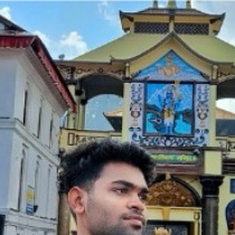
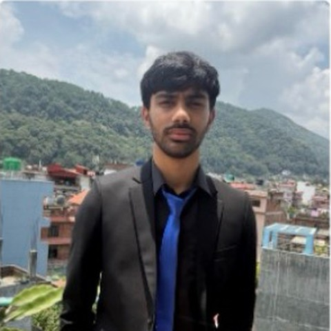
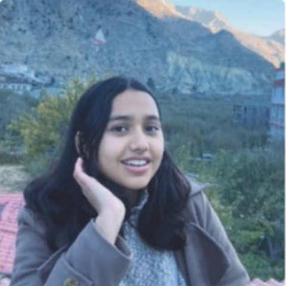
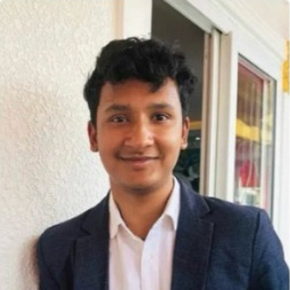
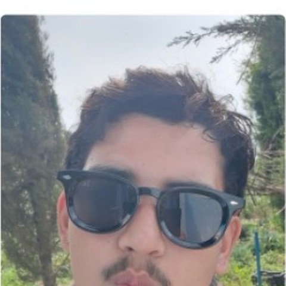
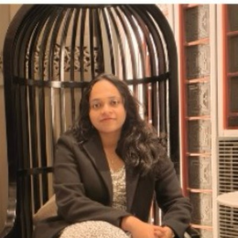

Team Black Box investigates shortcut learning in medical imaging. We use Grad-CAM to audit what models actually look at when they make a prediction — and often, it's not what a clinician would.
8 members — a mentor, a peer mentor, and six researchers each running their own investigation.
Leads Team Black Box's research agenda across interpretability and trustworthy AI deployment. Incubate Nepal 2026.
Co-leads experiment design, Grad-CAM pipelines, and keeps our results reproducible.

Testing whether chest X-ray models quietly learn hospital markers instead of real pathology.

Running sanity checks on Grad-CAM to find out when saliency maps can — and can't — be trusted.

Comparing where models look against where doctors look, case by case.

Building a CNN from scratch to see what each layer actually learns to detect.

Hunting for the cases where Grad-CAM looks confident but is completely wrong.

Turning our findings into a practical checklist for deploying medical AI responsibly.
From random weights to structured features. Building and dissecting simple CNNs from scratch.
Shortcut learning. Models that ace accuracy by focusing on hospital markers, not pathology.
Grad-CAM, sanity checks, human-aligned evaluation. Making deployment auditable.